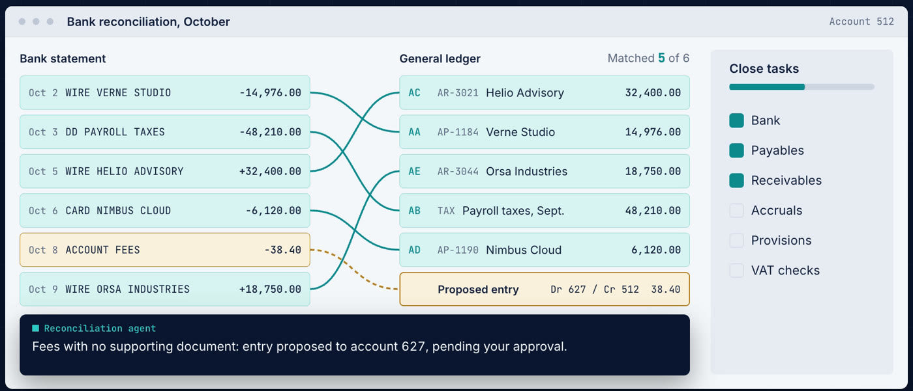

Transformation finance
« Notre clôture prend deux semaines, les contrôles reposent sur deux personnes et le reporting groupe se reconstruit à la main chaque mois. »
- Refonte du processus de clôture et du calendrier, de 15 jours à moins de 7
- Contrôles et gouvernance : délégations de pouvoir, séparation des tâches, RACI
- Reporting groupe et consolidation multi-GAAP, interco et prix de transfert
Livrables · processus cible, calendrier de clôture, matrice de contrôles, pack de reporting
